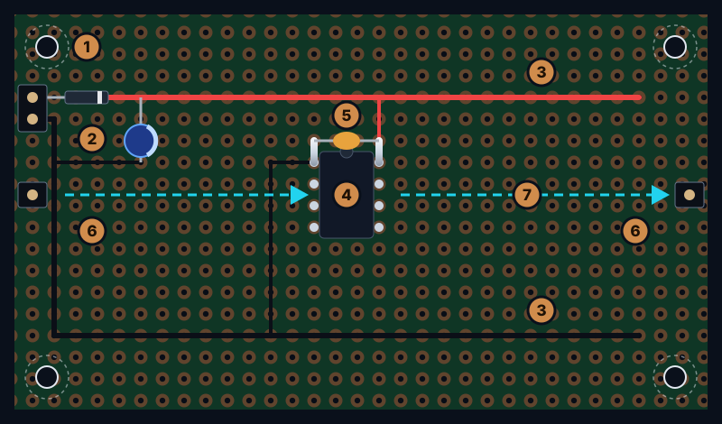
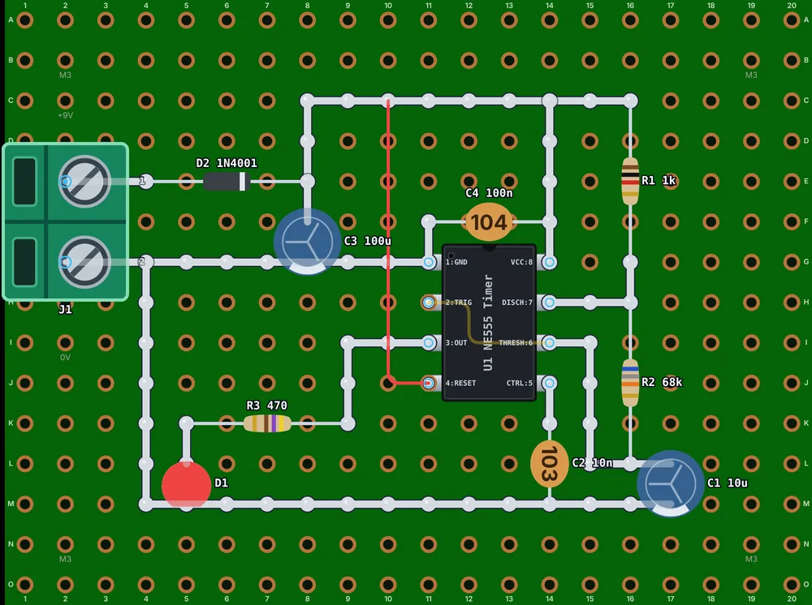
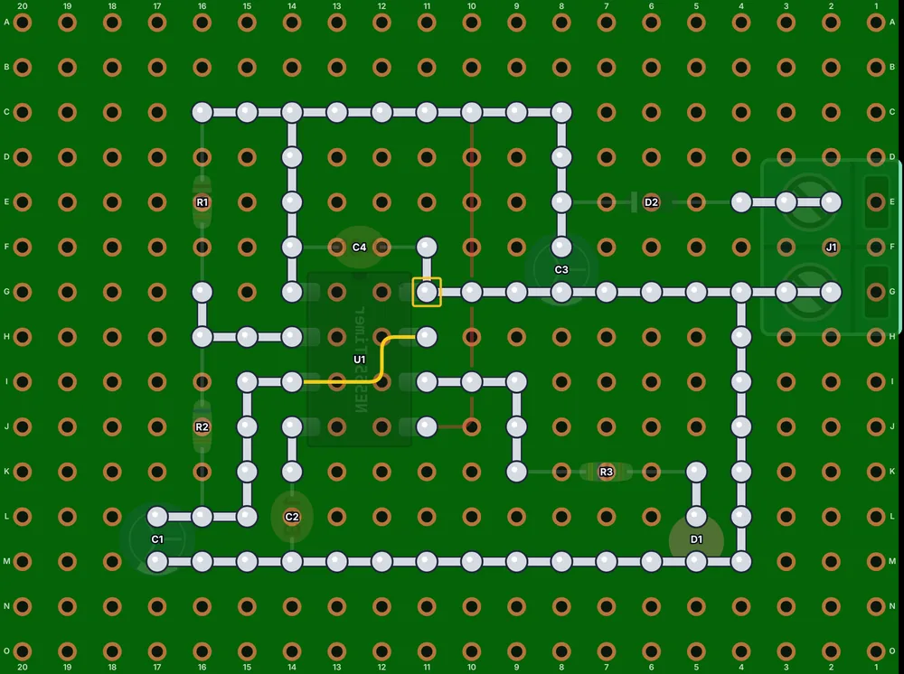

Before you start
A layout is a translation. A schematic says what connects to what; a layout turns that into a physical arrangement where every connection is a short piece of lead, wire or solder. It goes best with three things to hand:
- A circuit you trust. Ideally it already works on a breadboard. Photograph the breadboard before you take it apart.
- The schematic, printed, so you can tick connections off with a highlighter as you place them.
- The real parts. A symbol won't tell you that your capacitor is 10 mm across or that your potentiometer's legs are 5 mm apart. Measure the big and odd-shaped parts, or stand them on the board, before you commit to a plan.
Plan on paper (any squared paper works, one square per hole), in a spreadsheet, or in a layout tool. The point is to make your mistakes where they cost nothing.
What a good layout looks like
Before the steps, here's where they lead. Whatever the circuit, a tidy perfboard tends to have the same anatomy:

- Mounting holes in the corners, with clear space round each for a screw head and standoff.
- Power comes in at the edge, through a reverse-polarity diode, with a bulk capacitor right there.
- The rails: positive along the top, ground along the bottom, so every part is a short hop from both.
- The chip in the middle, in a socket, with free holes on both sides for the parts that meet its pins.
- A 100 nF decoupling capacitor right across the chip's power pins.
- Input on one edge, output on the other, where the cables are.
- The signal flows one way across the board, stage by stage.
The steps below build it up in order, and the worked example at the end shows it on a real circuit.
1. Pick the board and its size
Decide between perfboard and stripboard first (see how to choose), then estimate the size: add up the parts' footprints, roughly double it to leave room for wiring, and keep a couple of spare rows round the edge for mounting holes. If the board goes in a box, start from the inside of the box and work inwards.
2. Place the big parts first
Some parts decide where everything else goes. Place them first, in this order:
- Whatever the outside world touches: power and signal connectors, switches, pots, and LEDs that show through a panel. Put connectors on the edges, so cables don't cross the board, and line controls up with the holes they'll poke through.
- Chips and modules. Use a socket for every DIP chip: it saves the chip from your iron and lets you swap it later. Plug-in modules such as an Arduino Nano go on female headers. Leave a few free columns on each side for the parts that connect to their pins.
- Big parts: electrolytic capacitors, regulators, relays, and anything that gets warm or needs a heatsink.
Then fill in the small parts (resistors, small capacitors, diodes) around them, each as close as you can to the pins it connects to.
3. Plan the power
Nearly every part needs power or ground, so give them a highway. The classic perfboard pattern is a positive rail along one long edge and ground along the other (or a pair of rails down the middle when chips sit on both sides), made of bare tinned wire, so any part can reach one with a short hop.
- Decouple every chip. Put a 100 nF ceramic capacitor directly across each chip's supply and ground pins, with the shortest leads you can manage. It's the cheapest insurance in electronics: it supplies the sudden gulps of current a chip takes, which long supply wires can't, and keeps logic from glitching and amplifiers from oscillating.
- Add a bulk capacitor (say 10 to 100 µF) where power enters the board.
- Consider a reverse-polarity diode in series with the power input. It costs about 0.7 V (less with a Schottky diode), but one day someone will connect the battery backwards.
- Use thicker wire for power than for signals, and give heavy currents (motors, relays, LED strips) their own short path back to the supply, instead of sharing the ground your sensitive parts use.
4. Follow the signal
Arrange the circuit the way the signal travels: input on one side, each stage in order, output on the other. A layout that reads like the schematic is easier to wire and check, and much easier to debug, because you can follow the signal stage by stage with a probe.
- Keep inputs away from outputs. In anything that amplifies (audio, sensors), a little of the output leaking back into the input becomes a whine or an oscillation. Distance is free.
- Group parts by job: the power supply in one corner, the timer and its parts in another. Each group becomes a small island you can understand at a glance.
- Let the parts do the wiring. When two parts share a connection, put their leads in neighboring holes and join them with the leads themselves. The best wire is the one you didn't need.
5. Route the connections
With everything placed, draw in the connections that the parts can't make themselves:
- Short and straight. Run wires along the grid, horizontally and vertically. They're easier to place, easier to follow, and use fewer pads.
- Route the long ones first, then fit the short ones around them.
- Few crossings. Bare wire on the copper side can't cross anything, so crossings go over the top as insulated jumpers. If a connection needs three crossings, move a part instead.
- Nothing under parts on the component side, and nothing so cramped you can't get the iron in. A short link under a chip's socket, on the solder side, is the exception: it's the classic way to join a 555's pins 2 and 6.
- Color-code the wires: red for positive, black for ground, then a color for each signal you'll want to find again.
- Leave a free hole between leads that belong to different connections, especially on single-sided boards, where solder loves to bridge.
Each way of making those connections (solder bridges, bus wire, jumpers, wire-wrap) is in How to wire a perfboard.
6. Mind polarity and orientation
A layout can be connected perfectly and still be dead because one part is the wrong way round. Mark these on your plan and check each one:
- Electrolytic capacitors: the stripe on the can marks the negative (−) lead, which is also the shorter one.
- Tantalum capacitors are the exception: their stripe, or a +, marks the positive lead. Put one in backwards and it can short and burn.
- Diodes: the band marks the cathode (K). Current flows from the anode to the cathode.
- LEDs: the longer lead is the anode (+); a flat edge on the rim marks the cathode.
- Chips: pin 1 is by the notch or dot, and the pins count counterclockwise from there, seen from above.
- Transistors and regulators: parts that look identical can have their pins in a different order. Check the datasheet, not your memory.
Tip: turn all polarized parts of a kind the same way: every electrolytic with its minus toward ground, every diode's band on the same side. Then a mistake stands out at a glance.
7. Check it before you solder
Go through the schematic connection by connection and tick each one off in highlighter as you find it on the layout. Then look for the opposite mistake: anything connected that shouldn't be. It sounds tedious and takes ten minutes. Finding the same mistake on a soldered board takes an evening.
The Nets panel does this as you work: it lists which pins every wire, strip and solder path connects, flags pins left unconnected, and warns about supply rails shorted together and polarized parts that look backwards. Add your schematic's connections under Required connections, and each one is ticked off as you wire it.
The mirror-image trap
Here's the mistake nearly everyone makes once. You plan the board looking down at the parts, but you solder it upside down, looking at the copper. Turn a board over and left swaps with right: the chip whose pin 1 was top left has pin 1 top right, and the rail you ran along the left edge is now on the right.


A few habits make it painless:
- Wire the copper side from a solder-side view: a mirrored print of your layout, or a tool that draws one.
- Mark a corner. Put a dot of marker on the same corner on both faces, and count holes from it.
- Find pin 1 first. Before soldering a chip socket, find pin 1 from the copper side and mark it.
- Name the holes like a chessboard (rows A, B, C…, columns 1, 2, 3…) so you can find any hole from either side.
Press B for the solder side view: the board turns over, mirrored as it is in your hand, with every joint to solder marked, pin 1 of each chip outlined, and every strip cut marked with a red ✕. File › Export PDF prints the top and the solder side at true size (1:1), to lay on the board while you work.
Worked example: a 555 blinker
Here's how the steps play out on a classic first project, an NE555 timer flashing an LED from a 9 V battery, on a perfboard 20 holes by 15 (the pictures above):
- Power at the edge: the screw terminal J1 sits on the left edge, with the reverse-polarity diode D2 and the 100 µF bulk capacitor C3 right beside it.
- Rails: bare tinned wire carries +9 V along the top and ground along the bottom, and a short ground bus runs from J1 to the chip, so every part is a short hop from both.
- The chip in the middle, with the 100 nF decoupling capacitor C4 right across its supply pins, its timing parts (R1, R2 and C1) in a column on the right beside the pins they join, and the LED with its resistor at the bottom left, fed from the output on pin 3.
- Few wires: parts' leads land on the rails wherever they can. The red jumper, on top, ties reset (pin 4) to +9 V over the copper-side wiring below it, and pins 2 and 6 are joined by a short link under the socket, on the solder side.
- The finishing touches: the corners clear for M3 mounting screws, the polarized parts all turned the same way, labels at the terminal, and a description that says how it all works.
The link opens a reading page where you can turn the board over, list its parts and connections, and open your own copy in the editor to change it.
Its schematic, parts list and every build step are on one page: Build a 555 LED blinker.
Layout cheat sheet
- Circuit proven on a breadboard, schematic printed, real parts measured.
- Board size counted in holes, with a spare border for mounting holes.
- Connectors and controls on the edges, where they meet the outside world.
- Every DIP chip in a socket; modules on female headers.
- Power and ground rails within a short hop of every part.
- A 100 nF capacitor at every chip's power pins; a bulk capacitor at the power input.
- The signal flowing one way, with inputs far from outputs.
- Wires short, straight and few; crossings on top, insulated.
- Polarized parts marked and turned the same way; pin 1 found from both sides.
- Every schematic connection ticked off, and nothing extra connected.
- A mirrored (solder-side) copy of the plan ready for the bench.
Frequently asked questions
Which side of the perfboard do the components go on?
On a single-sided board, the parts go on the plain side and you solder on the copper side, with the leads poking through. On a double-sided board with plated holes either side works, but pick one and stick to it.
How far apart should components be on perfboard?
Leave at least one free hole between leads that belong to different connections. A quarter-watt resistor lying flat usually has its leads four holes apart (0.4 inch, about 10 mm); standing on end, it fits in two neighboring holes.
Do I need software to plan a perfboard layout?
No: squared paper works, one square per hole. Software helps because it checks what you've connected, warns about mistakes, mirrors the board for soldering and makes changes painless.
Should I put chips in sockets?
Usually, yes. A socket protects the chip from soldering heat, lets you swap a dead or wrong chip in seconds, and lets you test the board's power the first time with the chips out.
Further reading
The sources behind this guide, and good places to go deeper:
- Start building cleaner perfboard projects using these simple tips (Digi-Key Maker.io)
- Moving from solderless breadboard to a soldered circuit (Adafruit)
- Using Perfboard (Instructables)
- How to choose and place decoupling capacitors (JLCPCB)
- Perfboard (Wikipedia)
Plan your next board in Perfboard Designer
Free, in your browser, no sign-up: lay out perfboard or stripboard, check every connection, flip to the solder side and print it at true size.